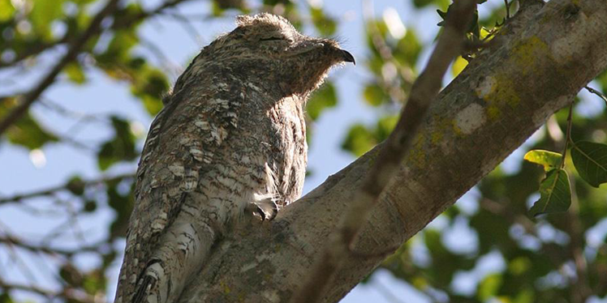

Great Potoo
AKA: Poor-me-ones Scientific Name: Nyctibius grandis Family: Nyctibiidae Species: N. grandis Speed: Unknown Length: 48 – 60 cm Mass: 0.36 – 0.65 kg Wing Span: 70 – 80 cm Life Span: NA Location: Tropical America Diet: Large flying insects. Bats are taken occasionally as well.
Appearance:
A large head and eyes with a brown to the yellow iris. It has a short and broad bill. Its wings are elliptical. The feather colors are white, black, gray, and burgundy.
Facts:
- It is a rare bird.
- It sleeps during the day and is only active at night.
- It does lay a single egg, but place it in broken off stem or the nook of a branch.